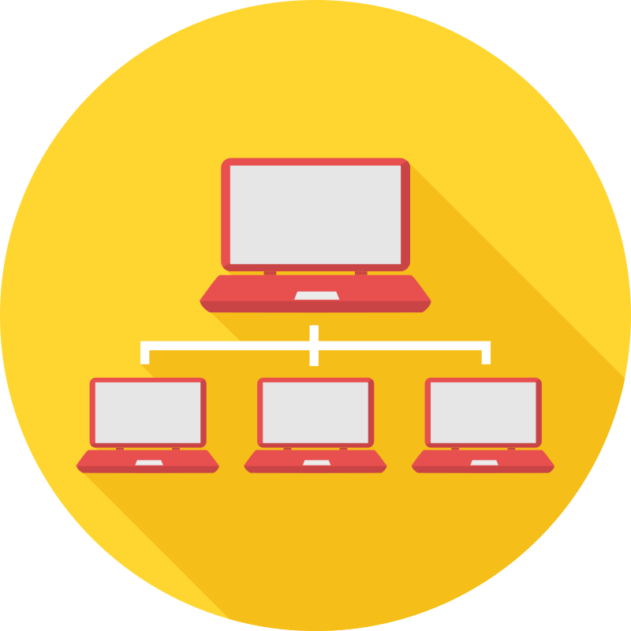
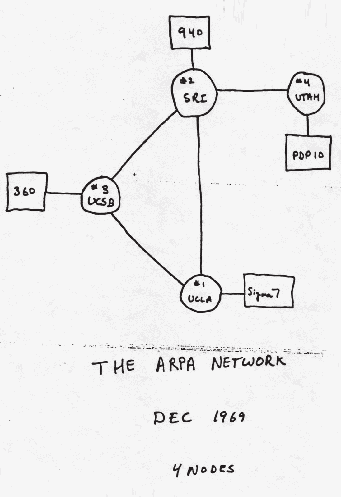
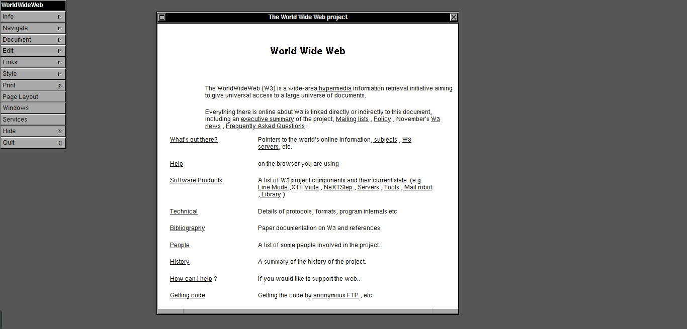

The Origins of the Internet & the Web
From the first connected computers to the websites we use every day, discover how the Internet and the World Wide Web changed the way people communicate, learn and share information.
Explore the history
Before the Web

The story of the Internet started long before people could browse websites or use social media. During the 1960s, researchers began looking for ways to connect computers and share information over long distances. One of the most important projects was ARPANET, developed by the Advanced Research Projects Agency in the United States. Its first four nodes were connected by December 1969 (Leiner et al., 1997).
ARPANET connected research institutions and allowed them to share computer resources. An important idea behind this network was packet switching. This method divides information into smaller pieces called packets, which travel through a network and are reassembled at their destination (Leiner et al., 1997).
Another major development was TCP/IP, a set of communication protocols that allows different networks to exchange data. TCP helps deliver data reliably, while IP handles addressing and forwarding packets. On January 1, 1983, ARPANET completed its transition from NCP to TCP/IP, an important step in the growth of the Internet (Leiner et al., 1997).
The Internet vs. The Web
The Internet
The Internet is a global network of connected computers and devices that communicate with each other using different protocols, such as TCP/IP.
The World Wide Web
The World Wide Web is a system of linked pages and information that people access through web browsers using the Internet.
The Birth of the Web
The World Wide Web was invented by Tim Berners-Lee, a British computer scientist working at CERN in Switzerland. In March 1989, he proposed a system that would make it easier for researchers in different places to share information (CERN, n.d.).
His idea was based on hypertext, which connects documents through links. In November 1990, Berners-Lee and his colleague Robert Cailliau submitted a more detailed proposal for the project. By the end of that year, the first web browser and web server were running at CERN (CERN, n.d.).
The first website explained the World Wide Web project and how people could use it. In August 1991, Berners-Lee announced the WWW software on Internet newsgroups, helping the project reach people outside CERN. On 30 April 1993, CERN made the Web software available on a royalty-free basis, which helped it spread around the world (CERN, n.d.).

Early Internet Technologies
An early way to send messages over a network.
Telnet
A tool used to access remote computers through a terminal.
SSH
A secure method for remotely accessing computers.
FTP
A protocol used to transfer files between computers.
HTTP
A protocol used to transfer information between web servers and browsers.
Gopher
An early system for finding and browsing information on the Internet.
Web Browser
A program that allows users to access and view websites.
Lynx
A text-based browser that displays web pages without images.
Mosaic
An early graphical browser that helped make the Web easier to use.
Hypertext
Text containing links that connect information and documents. Web5 is not an established Web standard.
Timeline: Key Milestones
- 1969: ARPANET has its first four connected nodes.
- 1972: Email becomes an important ARPANET application.
- 1973: Work begins on the Internetting project that leads to TCP/IP.
- 1983: ARPANET completes its transition to TCP/IP.
- 1989: Tim Berners-Lee proposes the World Wide Web.
- 1990: The first web browser and server run at CERN.
- 1991: The WWW software is announced on Internet newsgroups.
- 1993: Mosaic is released and CERN makes the Web software available royalty-free.